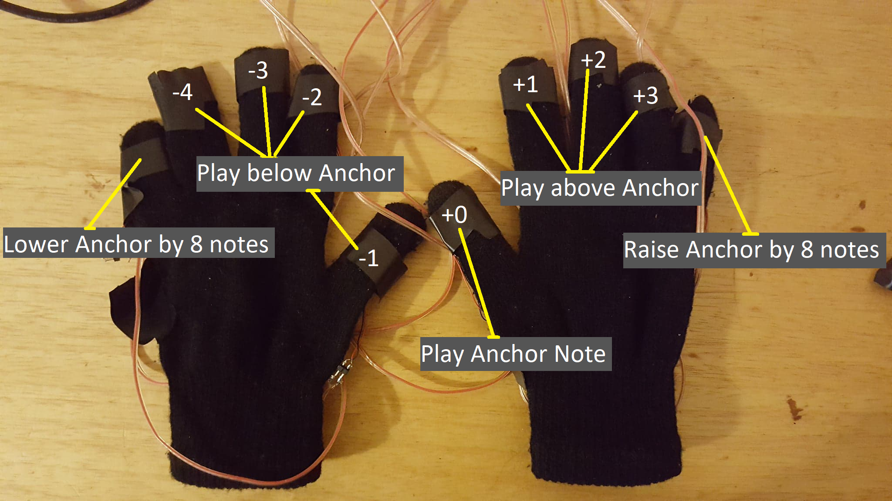
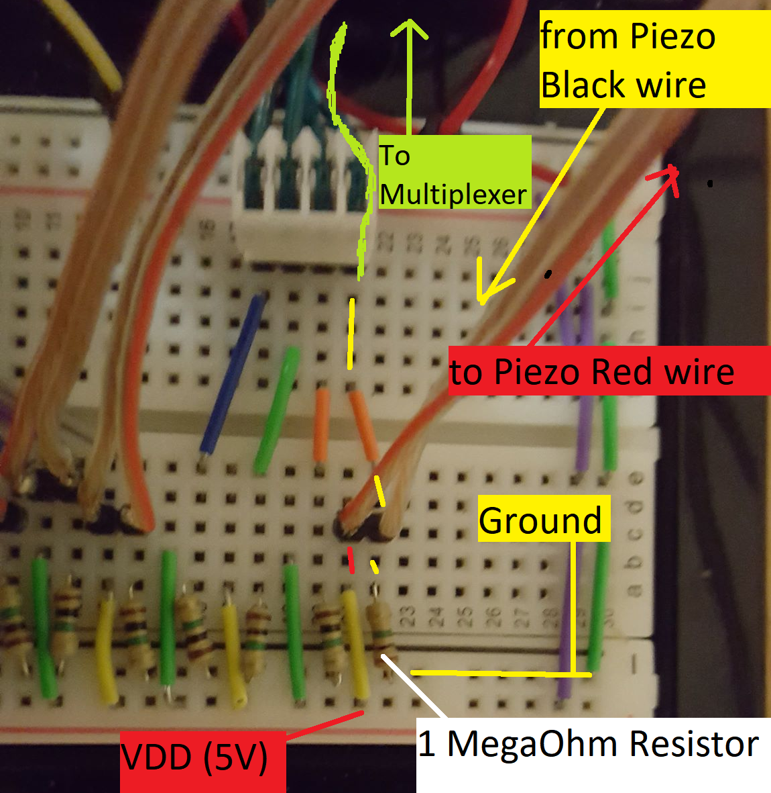

The Secret Piano was inspired by a joke idea that I came up with when I was instructed to make an instrument using a Makey-Makey and some random items. I came up with the "Ham Piano" mostly because I wanted to play 'Hamazing Grace'. In doing so, I stumbled into an interesting control paradigm.
With the Ham Piano, I came up with a way to play all the keys on the piano with just one hand and without a lot of motion. There were definitely some limitations such as not being able to jump more than 6 notes at once. It also was not a very polished design given that I made the whole thing in a matter of a few hours. Nevertheless, the Ham Piano inspired me to create the Secret Piano.
While the main motivation for the Secret Piano was to be able to play the piano without a keyboard and using only 10 fingers, I discovered several advantages it has over the standard piano during the development process. Because of the different control paradigm, you can train your fingers to learn a certain melody and easily have that melody transposed to another part of the keyboard without the need to actually move your hands or adjust for a different layout of black and white keys. The Secret Piano also allows users with less arm/hand mobility to play without a problem.
While I don't think the Secret Piano is meant to replace existing pianos, I see the instrument as a cool learning tool for novice pianists or an experimental tool for musicians who can't always have a keyboard by their side. With some improvements to the design, you could play the Secret Piano wirelessly without the need to be sitting or wired in; this would let a musician quickly put on some gloves and make some music on the spot.
The Secret Piano is essentially a pair of gloves with a Piezo on the tip of each finger. When a knock is detected by a finger touching any surface, a signal is sent from the Piezo on the glove to the Arduino board, then to the Arduino software, and then to a Max Patch where the sound is finally produced.
The note that is played after a signal is sent is based off the 'anchor note'. The right thumb will play the anchor note while the left thumb will play one note below the anchor. In a similar fashion, the right index finger will play one note above the anchor. This mapping continues until the pinky of each finger. In this way, your middle 8 fingers will play a note that is a low as 4 notes below the anchor note and as high as 3 notes above the anchor note.
The anchor is changed using the right and left pinky fingers. While the left pinky will lower the anchor by 8 notes, the right pinky will raise the anchor by 8 notes. In this way, all the notes on the piano are able to be played. The one downside is that you cannot have one hand playing low notes on the far left of the piano with another hand playing high notes on the far right of the piano. Only notes that are within a certain vicinity can be played.
In a ideal world, the sound produced by the laptop's speaker would be as good as a grand piano. Unfortunately, the sound actually produced is a square wave that is affected by some preset ADSR parameters. In addition, the Piezos only send an on/off signal to the Max Patch even though they could send a wide range of pressure readings. This was a design decision made to avoid noisy readings, as a result the volume of each note is constant. Lastly, the current implementation of the Secret Piano cannot play multiple notes at once (polyphony). Because of this, if two inputs are received around the same time, only the last input will be played.
Below is a guide on how to make your own secret piano, I've provided tips for mistakes I wouldn't want to make again if I re-did this project
Each finger of the two gloves has a Piezo attached with electrical tape to the tip of each finger. The thumbs have the Piezos taped more toward the outside (the place where you hit the spacebar on your keyboard with your thumb) for convenience. The gloves are made of cheap cotton, I would avoid using similar gloves because they introduce electrical issues when you start to get sweaty -- this is the main reason why I had to put electrical tape on my fingers before putting the gloves on. The cotton gloves are also quite difficult to take on and off.
Each piezo has its red and black wire soldered to a 3ft cable that wires to the breadboard. If I were to do this again, color coding the black/red wires and cable management with zipties would be a priority.
Each Piezo and 3ft cable is wired into the breadboard in the following way: (Some cables from other Piezos have been removed for clarity)
I used a 1 MegaOhm Pullup resistor to make the Piezos more sensitive. Using a less resistance might give you a more precise measurement of how much force is being applied but because I was only sending an on/off signal to the Arduino, I was mostly concerned with whether or not the Piezo detected any force.
Each Piezo's input is then wired to a multiplexer, here is a guide on how to set up your own multiplexer as well as how to write the code on the Arduino side
The purpose of the Arduino code is to read the inputs from the multiplexer and then serialize the data so that it can be efficiently sent to Max. I've thoroughly commented the Arduino code to explain what is going in the backend
The purpose of the Max Patch is to read the input from the Arduino software, deserialize the data and make some beautiful music! While the Max Patch is also thoroughly commented in the git repository, I encountered a bug with Max that made notes read from the Arduino code play until a new note was read or the Max Patch was locked/unlocked. This prevents the Max Patch from being silent once the first signal is detected, my workaround was to have an autoclicker lock and unlock the max patch but if you find a better solution, I would love to hear about it!
The Secret Piano is an interesting alternative to the control paradigm set up by the piano. Rather than having to move your hands to play different notes, the secret piano essentially moves the keyboard under your hands (through the input of your pinkies). While the sound is not great and it does not magically make me a better pianist, the Secret Piano lets you play without a keyboard and on any surface, you don't even have to move anything but your fingers while playing it.
To improve the Secret Piano, I think a great place to start would be to implement polyphony and make the synthesized noise sound more like a piano. While there is no requirement for this instrument to sound like or emulate a piano, I think these improvements would make the instrument seem like a viable alternative the the piano. Alongside this change, having the piezos detect pressure rather than on/off could add volume as another parameter available to the musician.
On the hardware side of the Secret Piano, there is a lot that could be to make the gloves less restrictive and more precise. With a better wiring system and better gloves, the Secret Piano could be used in more situations without having to worry about breaking the solder connections or ensuring that the knock signals are detected. There is also the potential to add more inputs such as foot pedals as anchor notes to provide some control that pianists are used to.
While I do not have thousands of hours of experience playing either the piano or the Secret Piano, I think there is a lot of room to experiment with the 'anchor note' control paradigm. I simply moved the anchor note up and down 8 notes at a time, having each finger play one of the black/white keys in a certain range. Without changing any of the hardware, the inputs could be vastly changed.
To start out, there is no requirement for the pinkies to be mapped to changing the anchor, if it is more comfortable the thumbs or any set of adjacent fingers. In the same vein, there is no requirement for the anchor to shift 8 notes at a time, with a smaller shift you could easily play certain note pairs without having to change anchor between each note.
Currently, the middle eight fingers play both black and white keys. This makes the range of notes able to played quite small. With one finger being mapped to a 'sharp modifier' the range of natural notes that can be played without moving the anchor is significanlty bigger.
There is also no need to even have an anchor note, for certain pieces of music it might be worthwhile to have the fingers in your left hand switch between certain predefined mappings in your right hand, this would let you easily play two different melodies with the same finger rhythm in your right hand.
While there are many improvements that can be made to my own Secret Piano, I encourage everyone out there to rethink how current instrument control paradigms can be changed and how this control paradigm can be applied to other instruments.